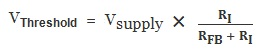
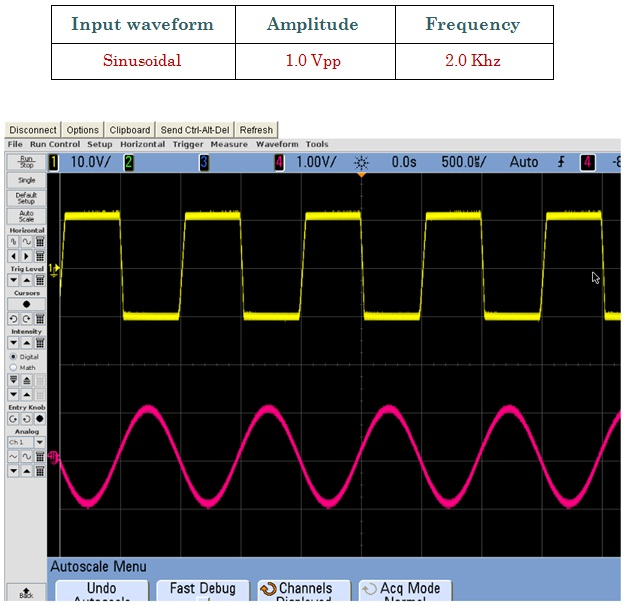
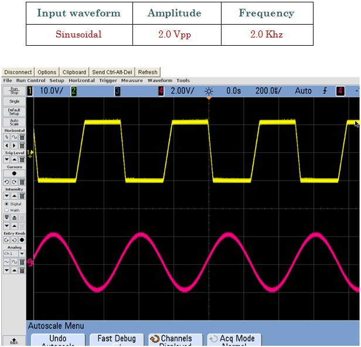

The voltage needed to switch the output of the comparator must be above or below zero (ground), according to the POSITIVE and NEGATIVE power supply and according to the resistors RI and RFB. More specific, the formula to calculate the threshold voltage is:

So, if the output is to the POSITIVE voltage, the required negative voltage that must be applied to Vin is:
VINPUT < = - VTHRESHOLD
If the output is to the NEGATIVE voltage, the required positive voltage that must be applied to Vin is:
VINPUT > = VTHRESHOLD

Fig.2 Shows Input signal (Red wave form) and Output (Yellow Waveform)

Fig.3 Shows Input signal (Red wave form) and Output (Yellow Waveform)